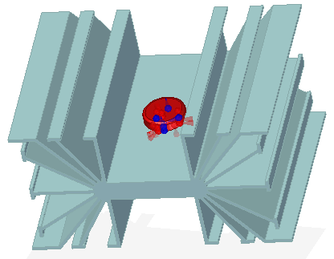
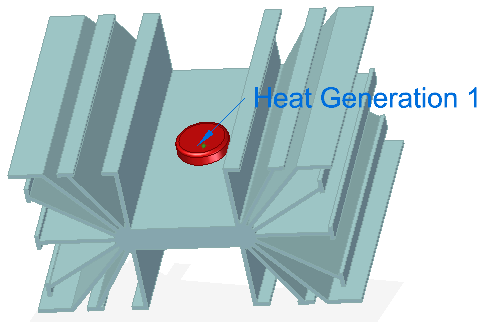
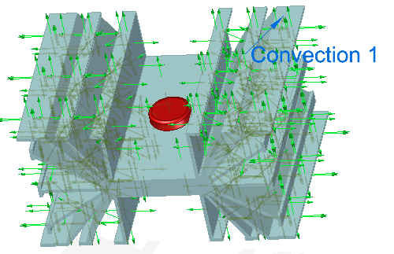
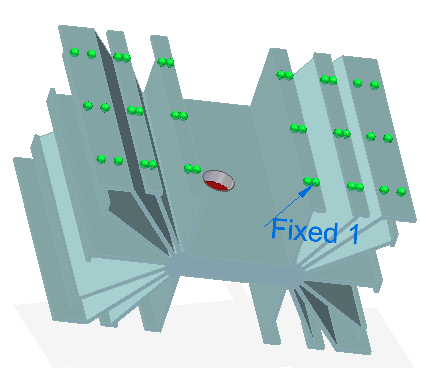
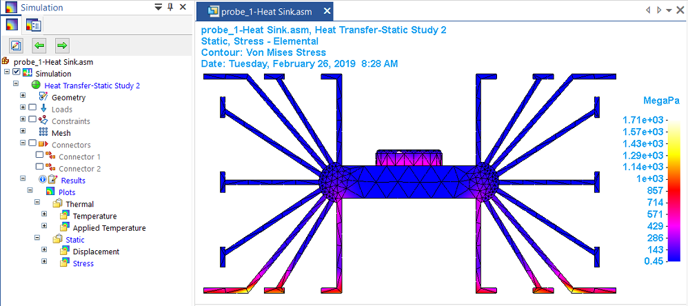

Define a coupled study for thermal stress analysis
Thermal stress analysis calculates stresses, strains, and displacements due to thermal effects caused by conduction, convection and radiation. In Solid Edge Simulation, thermal stress analysis is performed by a coupled study, which couples the results of a heat transfer analysis with a structural analysis. You can define a coupled study using either of the following study types:
-
Steady State Heat Transfer + Linear Static
-
Steady State Heat Transfer + Linear Buckling
Coupled studies require an advanced simulation license.
Use this process to define a thermal stress analysis. The results of the thermal analysis are used automatically to thermally load the model for the linear static analysis, which produces a stress value based on the thermal results. For more information, see:
The following example is of a transistor (a heat source) and a mounting plate, which dissipates heat (a heat sink). It can be modeled as a part or as an assembly,
-
Define a new coupled study. In the Create Study dialog box:
-
Select the Steady State Heat Transfer + Linear Static study type.
-
If the model is an assembly, you can create the required connectors automatically using the Connector Options section of the Create Study dialog box. Alternatively, you can create the connectors later using the commands in the Connectors group.
-
For the thermal analysis, connectors transfer heat between bodies. Use the Thermal Glue connector type for non-insulated faces. For connectors between insulated faces, select the Thermal connector type, and then modify the properties to specify the thermal conductance value.
-
For the linear static analysis, connectors simulate connections between components. Use either the Glue or the No Penetration connector type.
-
-
Use the Geometry group→Define command to select all of the study geometry.
Note:You can apply a thermal connector and a structural connector to the same faces. This simple assembly uses a Thermal connector type and a Glue connector.

-
-
Define the loads and the boundary constraints for the heat transfer analysis using the commands in the Thermal Loads group:
-
To specify heat power, heat generation, or heat transfer, use the Heat Generation command (for a body or feature in an assembly) and the Heat Flux command (on selected entities in a part or assembly model). A positive value indicates heat entering the model entity. A negative value indicates heat exiting the model entity.
-
To specify a heat dissipation mechanism and ambient temperature, use the Convection command. You also can conduct heat across the model using the Temperature command to apply different values to different faces, or you can use the Body Temperature command with the Temperature command.


-
-
Apply a structural constraint to generate a stress value in the linear static analysis results. For example, use the Constraints group→Fixed command to fully fix the bottom faces of the model.

-
Mesh and solve the study.
The heat transfer analysis is performed first, followed by the structural analysis. This two-stage processing is performed automatically. The temperature distribution results are used automatically as an input load to the linear static process.
-
Review the results.
In addition to the thermal distribution plots that are generated by the steady state heat transfer processing step, a coupled study produces displacement and stress results caused by the temperature load. A thermal coupled study also shows the X, Y, Z, offset results of the temperature applied to the deformed model.

How do I
Verify simulation material propertiesCreate a study
Create a study using a simplified model
Assign units in studies
Define and review a transient heat study
Define a harmonic frequency response study
Learn more
Creating and using studiesUsing materials in studies
Modifying studies
Structural studies
Thermal studies
Using steady state heat transfer studies
Coupled studies
Harmonic response studies
Create and solve a study using GD optimized model
Create and solve a study using an STL model
Defining thermal studies
Look up more details
Create Study (or Modify Study) dialog boxTransient Heat Options dialog box
Options: Harmonic Frequency Analysis dialog box